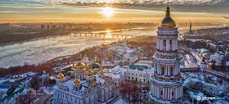
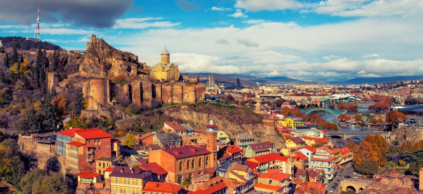
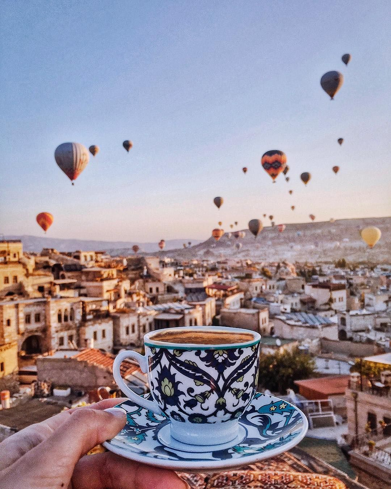

Travel Ukraine
Ukraine is a country in Eastern Europe. It is the second-largest country in Europe after Russia, which it borders to the east and north-east.[a] Ukraine also shares borders with Belarus to the north; Poland, Slovakia, and Hungary to the west; Romania and Moldova to the south; and has a coastline along the Sea of Azov and the Black Sea. It spans an area of 603,628 km2 (233,062 sq mi),[b] with a population of 41.4 million,[c] and is the eighth-most populous country in Europe. The nation's capital and largest city is Kyiv.
Travel Georgia
Georgia is one of the oldest wine-producingcountries in the world; local winemaking traditions are entwined with Georgia's national identity,[12] and have been classified by UNESCO as part of the world's Intangible Cultural Heritage.
Travel Turkey(Cappadocia)
Cappadocia is a historical region in Central Anatolia, largely in the Nevşehir, Kayseri, Aksaray, Kırşehir, Malatya, Sivas and Niğde provinces in Turkey. The name, traditionally used in Christian sources throughout history, continues in use as an international tourism concept to define a region of exceptional natural wonders, in particular characterized by fairy chimneys and a unique historical and cultural heritage.
